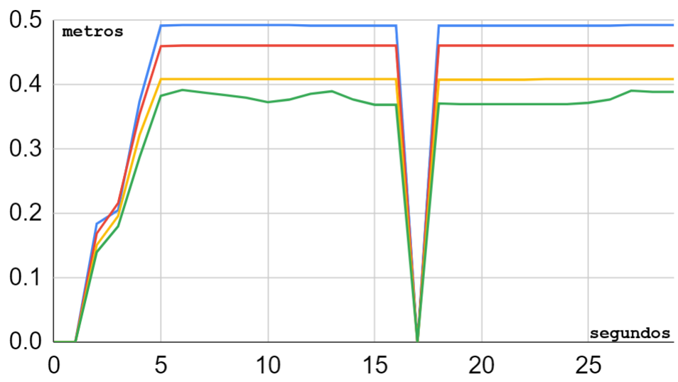
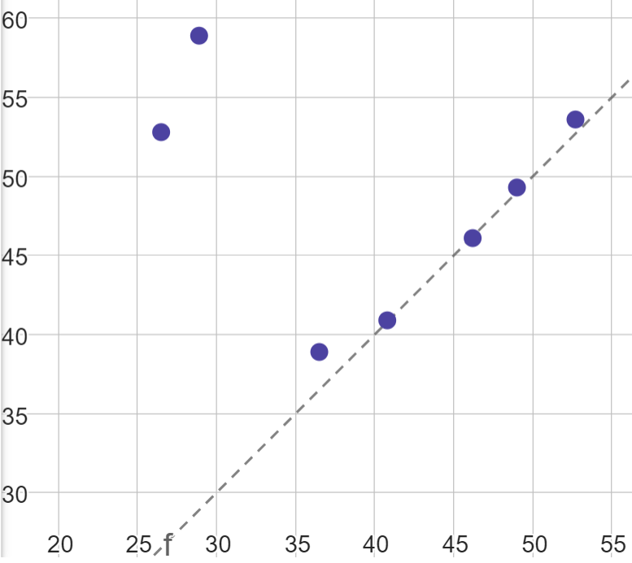

3.- Tipos de sensores soportados
3.1.- Soil Temperature Humidity And EC Sensor (Gemho)
El sensor de humedad / conductividad / temperatura del suelo, de ahora en más referido como sensor THE, es una herramienta importante para estudiar suelos salinos y su dinámica de salinidad. Mide la constante dieléctrica del suelo para reflejar con precisión el contenido de humedad del suelo. Es aplicable en diversas ocasiones como monitoreo de humedad del suelo, experimentos científicos, riego eficiente, invernaderos, agricultura de precisión, entre otros. Tiene características como integración de tres parámetros, resistencia a impactos y corrosión, alta precisión y opciones de salida de señal.
Características
Fabricante: Weihai Gemho Digital Mining Co., Ltd.
Origen: chino.
Alimentación: 3.6 / 30V.
- Medición de temperatura:
Rango: -40 a ~80℃.
Resolución: 0.1℃.
Precisión: ±0.5℃.
- Medición de humedad:
Rango: 0-50% o 0-100% (configurable).
- Resolución:
0.03% en el rango 0-50%.
1% en el rango 50-100%.
- Precisión:
±2% en el rango 0-50%.
3% en el rango 50-100%.
- Medición de electroconductividad:
Rango: 0-5000us/cm, 10000us/cm, 20000us/cm (configurable).
- Resolución:
10us/cm en el rango 0-10000us/cm.
50us/cm en el rango 100000-20000us/cm.
- Precisión:
±3% en el rango 0-10000us/cm.
±5% en el rango 10000-20000us/cm.
Entorno operativo: -40 a ~85℃.
Valores normales de un suelo agrícola
Parámetro |
Unidad |
Mínimo |
Máximo |
Aire |
|---|---|---|---|---|
Temperatura |
°C |
15 |
30 |
Ambiente |
Humedad |
%RH |
50 |
70 |
~50* |
Electroconductividad |
uS/cm |
0 |
500 |
0 |
Note
Si bien el sensor de humedad podría medir la humedad relativa del aire, que puede ser diferente a la humedad del suelo, puede variar ampliamente dependiendo del clima y la ubicación, pero en promedio, suele estar entre el 30% y el 70%. Sin embargo, en el laboratorio registramos un valor nulo.
Conexión
Color |
Descripción |
|---|---|
Rojo |
12V |
Negro |
Ground |
Verde |
RS485(A) |
Amarillo |
RS485(B) |
Tramas
El sensor THE recibe una sola trama y envía otra trama. Para que
mida temperatura, humedad y electroconductividad (the), la trama
que se le envía es se llama THE_request, y es la siguiente:
Add |
Function code |
Register start address |
Register length |
CRC |
|---|---|---|---|---|
0x01 |
0x03 |
0x00 0x06 |
0x00 0x03 |
0xE5 0xCA |
Add: dirección del dispositivo esclavo. Indica qué dispositivo esclavo MODBUS debe responder a la solicitud. En este caso, se está comunicando con el dispositivo esclavo de dirección 1, que es la que viene por defecto en el sensor.
Function code: indica el tipo de operación que se realizará en el dispositivo esclavo. En este caso, se está solicitando una lectura de registros de entrada con el código 03.
Register start address: indica la dirección del primer registro que se leerá. En este caso, el registro de inicio es 0x0006.
Register length: cantidad de registros a leer. Indica cuántos registros se leerán en la solicitud. En este caso, se están solicitando 3 registros.
Register length: CRC (Cyclic Redundancy Check). Es un valor de verificación que se utiliza para asegurar la integridad de los datos transmitidos. Estos dos bytes contienen el resultado del cálculo del CRC.
La trama de respuesta se llama THE_response, y es como sigue:
Address |
Function code |
Effective number of bytes |
Temp. |
Hum. |
EC |
CRC |
|---|---|---|---|---|---|---|
0x01 |
0x03 |
0x06 |
0x01 0x2C |
0x02 0x92 |
0x1D 0x4C |
0xEC 0xA6 |
Add: dirección del dispositivo esclavo.
Function code: indica el tipo de operación que se realizará en el dispositivo esclavo. En este caso, se está solicitando una lectura de registros de entrada con el código 03.
Effective number of bytes: es la cantidad de bytes que conforma la información de las variables medidas.
Temp: valor de temperatura. En este caso se recibe 0x01, 0x2C; se los coloca juntos para formar el hexa
0x012C, y convertido a decimal queda: 300, se lo divide entre 100 y se obtiene el valor de temperaturaTemp=3.00°C.Hum: valor de humedad; ídem al anterior y se obtiene
Hum=6.58%RH.EC: valor de electroconductividad; ídem al anterior pero no se lo divide entre 100 y se obtiene
EC=7500us/cm.CRC: CRC (Cyclic Redundancy Check).
3.2.- RS485/4-20mA Soil NPK Sensor (Gemho)
El sensor de suelo Ghhb-031-485 NPK, de ahora en más referido como sensor NPK, es un nuevo sensor integrado. Obtiene el contenido de nitrógeno, fósforo y potasio en el suelo donde está ubicado el equipo a través del equipo de adquisición.
El sensor NPK utiliza el principio de reflexión de dominio de frecuencia (FDR). Basado en el pulso electromagnético y la frecuencia de propagación de ondas electromagnéticas en el medio, se mide la constante dieléctrica aparente del suelo para obtener el contenido de nitrógeno, fósforo y potasio en el suelo.
El sensor tiene un bajo consumo de energía, alta precisión, alta sensibilidad, amplio rango lineal, fuerte capacidad antiinterferencias, excelente repetibilidad y estabilidad.
El producto se puede utilizar ampliamente en monitoreo ambiental, monitoreo meteorológico, agricultura inteligente, viveros de huertos, flores e investigación del suelo. En comparación con los sensores tradicionales de Internet de las cosas, tiene ventajas de alta precisión y fácil instalación.
El sensor NPK funciona como el sensor THE, se le envía dos tipos de tramas dependiendo qué parámetros se quiere. Para la temperatura, humedad y electroconductividad, se le envía la trama THE_request; y para el nitrógeno, fósforo y potasio, la trama NPK_request.
Características
Fabricante: Weihai Gemho Digital Mining Co., Ltd.
Origen: chino.
Alimentación: 9-18 V CC.
Rango: 0-1999mg/kg (para los parámetros N, P y K).
Resolución: ±2 % de F.E.
Precisión: ±2 % de F.E.
Entorno operativo: 5℃ a ~45℃.
Humedad: 15 a ~90%RH.
Warning
Las especificaciones de este sensor son distintas a las del sensor THE (temperatura, humedad y EC). Para una mejor comprensión, referirse a los manuales.
Conexión
Color |
Descripción |
|---|---|
Rojo |
12V |
Negro |
Ground |
Verde |
RS485(A) |
Amarillo |
RS485(B) |
Valores normales de un suelo agrícola
Parámetro |
Unidad |
Rango promedio |
Aire |
|---|---|---|---|
Nitrógeno |
mg/kg |
20-100 |
0 |
Fósforo |
mg/kg |
10-50 |
0 |
Potasio |
mg/kg |
80-200 |
0 |
Note
Los valores mínimo y máximo están sacados de internet groso modo y podrían variar dependiendo de un suelo agrícola en específico.
Tramas
La trama de pedido de NPK es la misma que para los sensores THE y
la trama de respuesta también. La trama NPK_request es:
Add |
Function code |
Register start address |
Register length |
CRC |
|---|---|---|---|---|
0x01 |
0x03 |
0x00 0x1E |
0x00 0x03 |
0x65 0xCD |
Y la trama de respuesta NPK_response es:
Address |
Function code |
Effective number of bytes |
N |
P |
K |
CRC |
|---|---|---|---|---|---|---|
0x01 |
0x03 |
0x06 |
0x00 0x25 |
0x00 0x25 |
0x00 0x28 |
0x41 0x28 |
N: valor de nitrógeno. En este caso se recibe 0x00, 0x25; se los coloca juntos para formar el hexa
0x025C, y convertido a decimal queda: 37 y se obtiene el valor de nitrógenoN=37 mg/kg.P: valor de fósforo; ídem al anterior y se obtiene
P=49 mg/kg.K: valor de potasio; ídem al anterior y se obtiene
K=40 mg/kg.
3.3.- RS485/4-20mA Soil PH Sensor (Gemho)
El pH es una medida de acidez o alcalinidad de una disolución acuosa. El pH indica la concentración de iones de hidrógeno presentes en determinadas disoluciones. El PH es adimensional.
El sensor de PH del suelo GHHB-031-485 es un nuevo sensor integrado. El sensor adopta el principio de reflexión en el dominio de frecuencia FDR. Basado en el principio del pulso electromagnético y la frecuencia de propagación de la onda electromagnética en el medio, se mide la constante dieléctrica aparente del suelo para obtener el contenido de PH del suelo.
Características
Alimentación: 9-18 V CC.
Señal de salida: RS485/0-5V/0-10V/4-20mA/4G/NB-IoT/LoRa/WiFi
Rango de medición: 0-14 PH
Exactitud: 0.01 PH
Tiempo de respuesta: ≤15 seg
Temperatura de operación: -40 a ~85 °C
Humedad: 15 %RH a ~90 %RH
Conexión
Color |
Descripción |
|---|---|
Rojo |
12V |
Negro |
Ground |
Verde |
RS485(A) |
Amarillo |
RS485(B) |
Tramas
Las tramas de pedido de THE y de NPK son las mismas que para los sensores
THE y NPK, respectivamente. La trama PH_request es:
Add |
Function code |
Register start address |
Register length |
CRC |
|---|---|---|---|---|
0x01 |
0x03 |
0x00 0x09 |
0x00 0x01 |
0x54 0x08 |
Y la trama de respuesta PH_response es:
Address |
Function code |
Effective number of bytes |
PH |
CRC |
|---|---|---|---|---|
0x01 |
0x03 |
0x04 |
0x03 0x2D |
0x78 0xA9 |
PH: valor de PH. En este caso se recibe 0x03, 0x2D; se los coloca juntos para formar el hexa
0x032D, y convertido a decimal queda 813; dividiéndolo ahora por 100 quedaPH=8.13.
3.4.- LT-CG-S/D-001-M1120-12 THE, NPK, PH sensor
Los sensores LT-CG-S y D-001-M1120-12 son sensores que miden temperatura, humedad, electroconductividad, nitrógeno, potasio, fósforo y PH de un suelo agrícola.
Características
Alimentación: 12 V CC.
Temperatura de operación: -20~50°C, 15~90 %RH
- Rango de medición:
Temperatura: -40 a ~80°C
Humedad: 0 a ~100%
EC: 0 a ~10000us/cm
PH: 4 a ~9
NPK: 0 a ~1999mg/kg
- Exactitud de la medición:
Temperatura: ±0.5°C
Humedad: ±3%
EC: ±4%
PH: 0.1
NPK: ±2 %FS
Conexión
Color |
Descripción |
|---|---|
Gris |
12V |
Negro |
Ground |
Verde/amarillo |
RS485(A) |
Marrón |
RS485(B) |
Tramas
La trama de pedido de este sensor es diferente a los anteriores, tiene una
sola trama en la cual se piden todos los parámetros. La PH_request es:
Add |
Function code |
Read register start position |
Number of read registers |
CRC |
|---|---|---|---|---|
0x01 |
0x03 |
0x00 0x00 |
0x00 0x0B |
0x04 0x0D |
Y la trama de respuesta PH_response es:
Valor |
Descripción |
Medición |
|---|---|---|
0x01 |
Sensor address |
|
0x03 |
Function code |
|
0x16 |
Data length |
|
0x01 0x07 |
T (°C) · 1/10 |
0x01 0x07 = 0x0107 = 263/10 = 26.3 °C |
0x01 0xD7 |
H (%) · 1/10 |
0x01 0xD7 = 0x01D7 = 471/10 = 47.1 % |
0x00 0x00 |
EC (ms/cm) |
0x00 0x00 = 0x00 = 0 ms/cm |
0x00 0x46 |
PH (adim) · 1/10 |
0x00 0x46 = 0x46 = 70/10 = 7.0 |
0x00 0x0F |
N (mg/kg) |
0x00 0x0F = 0x0F = 15 mg/kg |
0x00 0x14 |
P (mg/kg) |
0x00 0x14 = 0x14 = 20 mg/kg |
0x00 0x32 |
K (mg/kg) |
0x00 0x32 = 0x32 = 50 mg/kg |
0x00 0x00 |
Reservado |
|
0x00 0x00 |
Reservado |
|
0x25 0x80 |
Baud rate |
9600 |
0x00 0x01 |
Sensor address |
01 |
0x63 0xE7 |
Verificación |
3.5.- SUP-ZP Ultrasonic level transmitter (Supmea)
El medidor de nivel ultrasónico, de ahora en más referido como sensor LEVEL, es un dispositivo universal que combina las ventajas de varios otros medidores de nivel para lograr un diseño completamente digital y humanizado. Ofrece una medición y control de nivel perfectos, funciones de transmisión de datos y comunicación entre el hombre y la máquina.
Este producto utiliza un diseño de circuito modular, una placa PCB de varias capas de calidad militar, una estructura de hardware compacta y una disposición razonable. Admite una salida aislada de 4~20 mA, cuenta con módulos de transmisión de datos inalámbricos incorporados, como GPRS, LORA, GPS, RF y Bluetooth. También puede agregar módulos para lograr otras funciones según las necesidades del cliente.
El medidor utiliza chips de grado industrial importados y circuitos integrados especiales de compensación de temperatura digital, lo que le otorga una fuerte capacidad antiinterferencias. Además, permite ajustar arbitrariamente los límites superior e inferior de la salida en línea y cuenta con una pantalla local. La carcasa está hecha de plástico ABS resistente al agua, lo que lo hace compacto y robusto.
Este producto puede satisfacer la mayoría de los requisitos de medición de nivel de líquido y nivel de material sin entrar en contacto con el medio industrial. Además, resuelve completamente las limitaciones de los métodos de medición tradicionales, como los medidores de nivel de tipo de presión, capacitivos y flotantes, que pueden sufrir problemas de enrollado, obstrucción, fugas, corrosión del medio y mantenimiento inconveniente. Por lo tanto, puede utilizarse ampliamente en diversos campos relacionados con la medición y control de nivel de material y líquido. El sensor de nivel registra la distancia que hay entre la punta del sensor y la superficie de un líquido.
Características
Fabricante: Supmea.
Origen: chino.
Voltaje de operación 6-32 V CC.
Rango de medición: 5m, 10m,15m.
- Blind zone (zona ciega):
0.4m (para un rango de 5m).
0.5m (para un rango de 10m).
0.6m (para un rango de 15m).
Precisión: 0.3%F.S.
Consumo: <1.5W.
Temperatura de operación: -20 a ~60℃.
Medición opcional de distancia incremental/diferencial para medir el espacio de aire o el nivel de líquido
Intensidad de pulso transmitido de 1 a 15 dependiendo de las condiciones de trabajo.
Conexión
Conector |
Nombre |
|---|---|
3 |
RS485(A) |
4 |
RS485(B) |
5 |
12V |
6 |
GND |
Tramas
La trama de pedido de medición level_request de un sensor de
nivel es:
Address |
Function code |
Register address |
Read data lenght |
CRC |
|---|---|---|---|---|
01 |
04 |
0x00 0x00 |
0x00 0x02 |
0x71 0xCB |
Address: dirección del esclavo (sensor). En este caso la dirección es
0000, que es la dirección por defecto.Function code: código de función para indicarle al sensor que mida.
Register address: dirección del registro en donde se almacena el valor medido.
Read data lenght: cantidad de bytes qué leer desde
register address.
La trama que se recibe level_response del sensor es:
Address |
Function code |
Return data lenght |
Read data lenght |
CRC |
|---|---|---|---|---|
01 |
04 |
0x04 |
0x40 0xA0 0x00 0x00 |
0xEE 0x66 |
Return data lenght: cantidad de bytes que contienen la información leída.
Read data lenght: información leída.
Conversión a float
La variable de datos almacenada en el registro interno es un número de punto
flotante de precisión simple estándar IEEE754. Expresado en hexadecimal de
cuatro dígitos, ocupa cuatro direcciones de registro interno.
El programa almacena la trama de respuesta en un array de 11 elementos:
uint8_t response_level[11]
y la conversión a una variable tipo float se hace con las siguientes líneas:
uint8_t response1[4];
for (size_t i = 0; i < 4; i++) {
response1[i] = response_level[i+3];
}
uint32_t value = (response1[0] << 24) | (response1[1] << 16) | (response1[2] << 8) | response1[3];
float level = *((float*)&value);
Testing
El siguiente es un gráfico de los valores medidos en una superficie de agua para distintos niveles. Se enciende el sensor y se toma una medición cada 1 segundo durante 30 segundos.
Todas las líneas se estabilizan a los 5 segundos, con algunas cosas a tener en cuenta:
Todas las líneas tienen un punto nulo a los 17 segundos. Esto no es un valor que devuelva el sensor, sino un problema de comunicación con el sensor, pues la trama devuelta son todos 0:
00 00 00 00 00 00 00 00 00 00 00La línea más “baja”, las verde, se estabiliza a los 5 segundos también, pero su valor no se mantiene constante en el tiempo; esto es porque el nivel medido está en la zona ciega del sensor, que es de 40 cm.
Con esto, se decide lo siguiente:
El sensor se alimenta y se comienza a pedir mediciones desde los 5 hasta los 30 segundos a intervalos de 1 segundo.
Se promedian las mediciones obtenidas.
Los valores nulos se descartan del promedio
En la gráfica siguiente están los valores medidos reales vs los valores medidos con el sensor. Hasta los 40 cm se ven que ambos valores se aproximan; por debajo de los 40 cm, el sensor arroja valores aleatorios, y no son confiables.
3.6.- The Hydra Probe® Soil Sensor (Stevens)
El Hydra Probe Soil Sensor de la marca Stevens, de ahora en más referido como sensor STEVENS, es un sensor de suelo avanzado diseñado para medir múltiples parámetros importantes para el monitoreo y análisis del suelo. Está especialmente diseñado para proporcionar mediciones precisas y confiables en una amplia gama de condiciones de suelo.
El sensor utiliza tecnología de capacitancia para medir la humedad del suelo, la temperatura del suelo y la conductividad eléctrica del suelo. Estas mediciones son fundamentales para comprender las condiciones del suelo y su impacto en el crecimiento de las plantas, la gestión del riego y otros procesos agrícolas.
El Hydra Probe Soil Sensor es fácil de instalar y usar. Se puede integrar en sistemas de monitoreo y control automatizados para proporcionar datos en tiempo real sobre las condiciones del suelo. Además, es altamente resistente al agua y a la corrosión, lo que garantiza su durabilidad y confiabilidad en entornos desafiantes.
Este sensor es ampliamente utilizado en aplicaciones agrícolas, forestales, de investigación y de gestión del agua, donde el conocimiento preciso de las condiciones del suelo es esencial para tomar decisiones informadas.
En resumen, el Hydra Probe Soil Sensor de Stevens es un sensor de suelo de alta calidad y rendimiento que proporciona mediciones precisas y confiables de humedad, temperatura y conductividad eléctrica del suelo, lo que lo convierte en una herramienta valiosa para la monitorización y gestión del suelo en diversos campos de aplicación.
Características
Fabricante: Stevens® Water Monitoring System, Inc.
Origen: estadounidense.
Alimentación: 7 a 20 V CC (12V ideal)
Rango de temperatura: -30 to 65o C
Exactitud y precisión:

Conexión
Color |
Significado |
|---|---|
Rojo |
+12V |
Negro |
Ground |
Blanco |
RS485 (A) |
Verde |
RS485 (B) |
Tramas
El sensor Stevens espera tramas conformadas por caracteres ascii, son varios, pero en este proyecto usamos sólo 3:
Trama de medición.
Trama de T0.
Trama de T1.
Trama de medición
Esta trama pide al sensor que realice la medición de todos los parámetros y los guarda en memoria.
La trama de pedido de medición es:
///TR<CR><LF>
Warning
Aunque no se espera trama de respuesta de este comando, se debe esperar unos 3 segundos para darle tiempo al sensor para hacer la medición.
Trama de pedido de T0
Esta trama le pide al sensor el parámetro T0.
///T0<CR><LF>
La trama de respuesta es:
<addr><H>,<J>,<F>,<G>,<O>,<K>,<M>,<L>,<N><CR><LF>
Donde:
<addr>: es la dirección del dispositivo, va desde +000 hasta +999.
<H>: Moisture
<J>: Soil Electrical Conductivity (tc)
<F>: Temp C
<G>: Temp F
<O>: Soil Electrical Conductivity
<K>: Real Dielectric Permittivity
<M>: Imag Dielectric Permittivity
<L>: Real Dielectric Permittivity (tc)
<N>: Imag Dielectric Permittivity (tc)
<CR><LF>: Retorno de carro y salto de línea, respectivamente.
Warning
El pedido de esta trama no le ordena al sensor que mida, sólo le pide el parámetro T0.
Las comas forman parte de la trama.
Un ejemplo de esta respuesta es:
062+0.535,+0.060,+29.2,+84.6,+0.064,+42.952,+23.095,+44.388,+21.661<CR><LF>
Trama de pedido de T1
Esta trama le pide al sensor el parámetro T1.
///T1<CR><LF>
La trama de respuesta es:
<addr><F>,<G>,<I><CR><LF>
Donde:
<F>: Temp C
<G>: Temp F
<I>: Loss Tangent
Un ejemplo de esta respuesta es:
062+28.9,+84.0,+0.517<CR><LF>
3.7.- Contrastación entre sensor chino y Stevens
Las unidades de medida de humedad del sensor chino y del Stevens no son iguales.
Sensor Stevens: usa la unidad de medida
Water Fraction by Volume (wfv), que expresa el contenido de agua en el suelo. El wfv indica la fracción de volumen de agua presente en el suelo, es decir, cuántos mililitros (ml) de agua hay en un litro de suelo. Soil Moisture.Sensor chino: usa la unidad
Relative Humidity (%RH), que expresa el porcentaje de la cantidad de vapor de agua presente en el aire con respecto a la cantidad máxima que podría contener a una temperatura y presión específicas. Por ejemplo, una humedad relativa del 50% indica que el aire contiene la mitad de la cantidad máxima de vapor de agua que podría tener a esa temperatura y presión. Relative humidity.
Se hicieron mediciones poniendo los dos sensores en un mismo volumen en 4 entornos:
Al aire
En una maceta
Con la maseta y agua
En una maceta y agua caliente
Entorno |
Stevens [wfv] |
Chino [%RH] |
|---|---|---|
Aire |
0 |
0 |
Maceta |
0.1901 |
24.41 |
Maceta + agua |
0.357 |
95.57 |
Maceta + agua caliente |
0.422 |
100.0 |
Important
Los sensores miden dos magnitudes distintas cuyas unidades son también distintas. No hay una equivalencia lineal entre ambas.
3.8.- Parámetros del array
Básicamente, se tiene dos tipos de sensores: los que trabajan con
tramas hex y los que trabajan con tramas ascii. Cada uno
tiene sus propios tiempos para trabajar con los comandos.
Trama |
max [caract.] |
power [seg.] |
response [seg.] |
|---|---|---|---|
THE_request |
11 |
1 |
1 |
NPK_request |
11 |
1 |
1 |
level_request |
9 |
12 |
1 |
///TR\r\n |
1 |
1 |
3 |
///T0\r\n |
80 |
1 |
1 |
///T1\r\n |
80 |
1 |
1 |
Donde:
max: es la cantidad de caracteres máxima que se espera que tenga la respuesta.
power: es el tiempo que se debe esperar después de alimentar el sensor antes de mandar el comando.
response: es el tiempo que se debe esperar por la respuesta.

3.9.- Material descargable
- Soil Temperature Humidity And EC Sensor (Gemho):
- RS485/4-20mA Soil NPK Sensor (Gemho):
- SUP-ZP Ultrasonic level transmitter (Supnea):
- The Hydra Probe® Soil SensorSensor (Stevens):